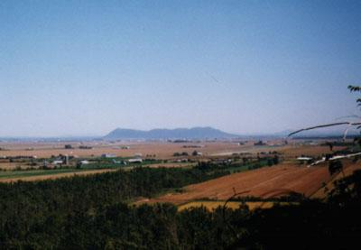

Mont Saint-Hilaire

Certaines personnes regardent
là où les autres ne regardent pas...
Elles voient donc ce que
d' autres ne voient pas...
d' autres ne voient pas...
Ouvrons les yeux
Il y a toujours un revers a une mêdaille (!)

Ici tout semble normal...
Mais prenez le temps de regarder autour.
Vous pouvez cliquer sur ce lien pour en savoir plus.